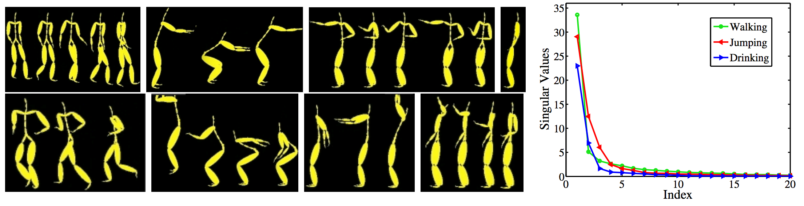
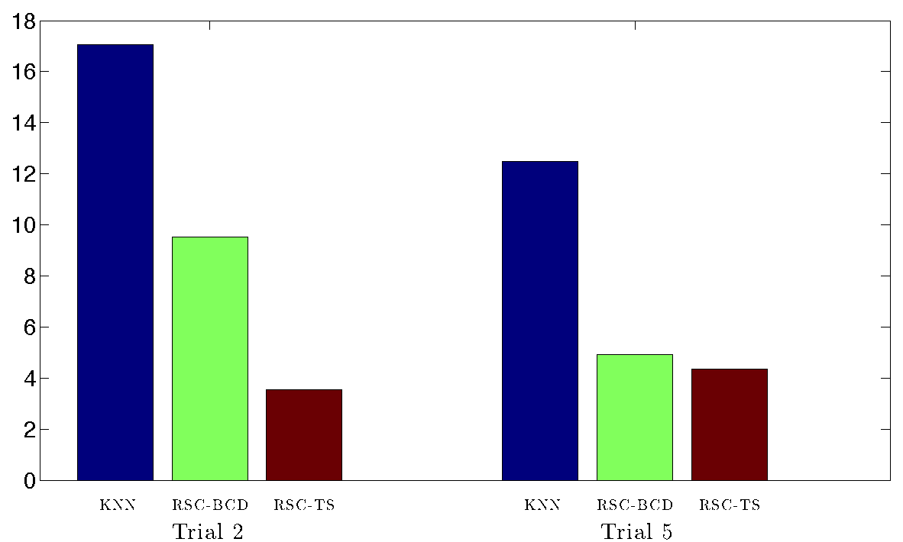
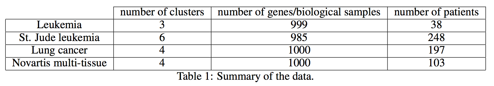
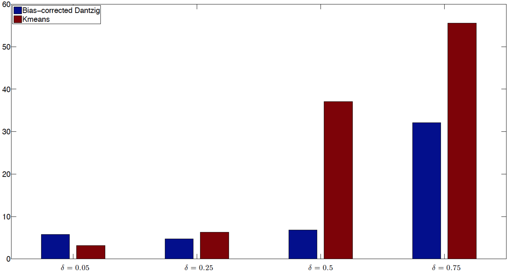
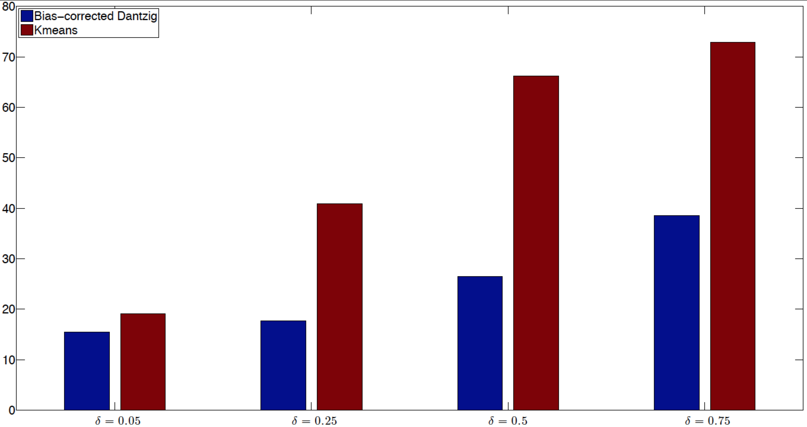
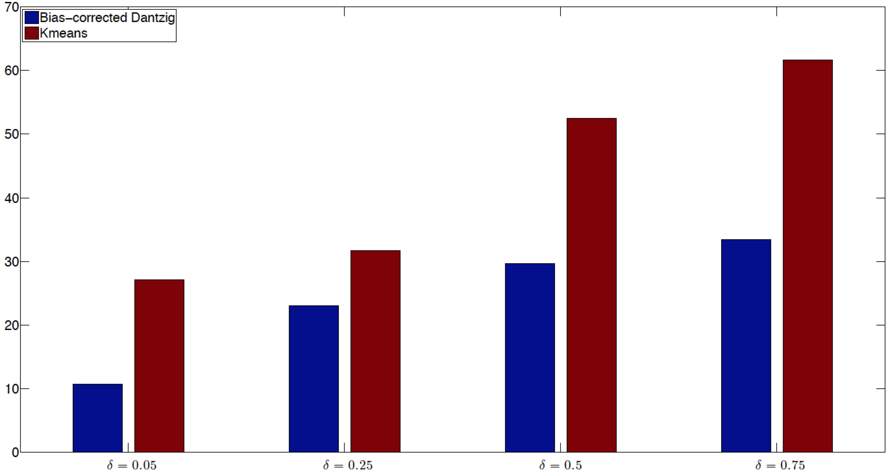
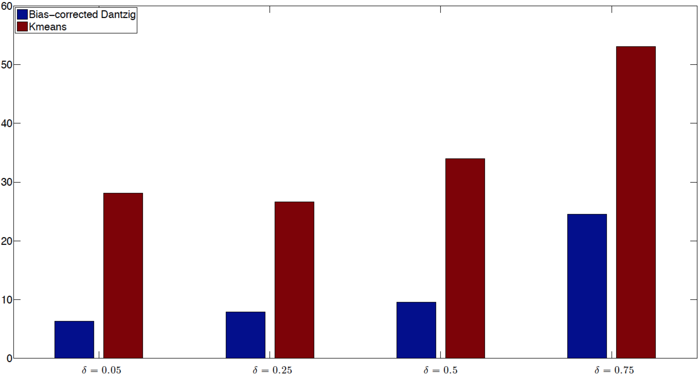
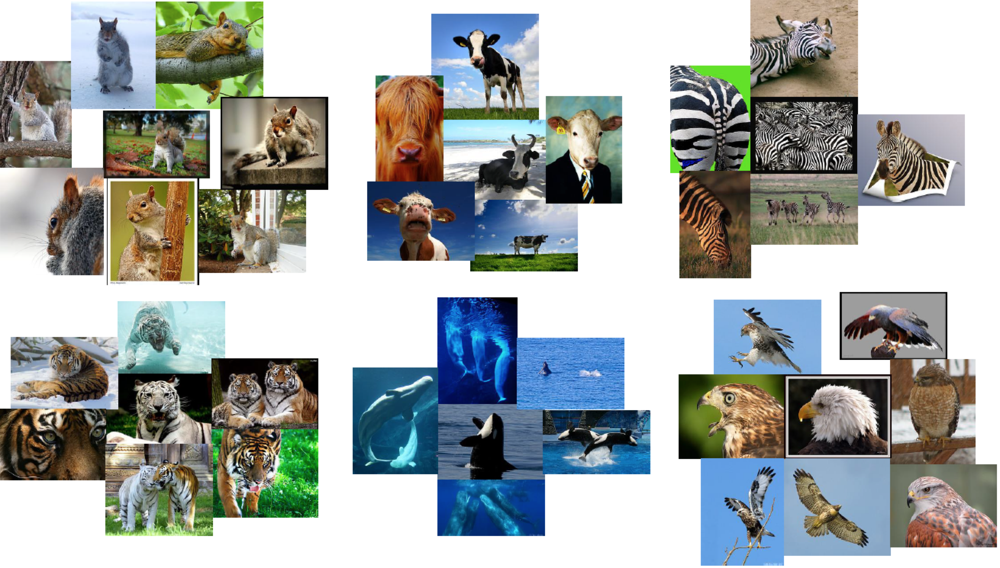
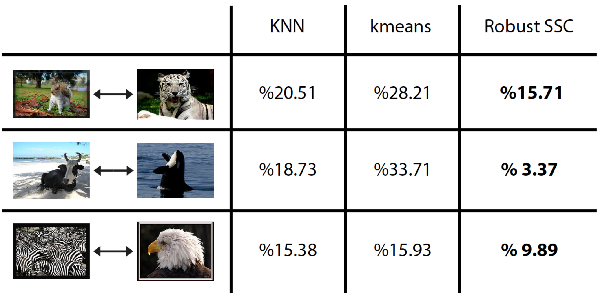

Applications
Note: This site is still under construction and will be updated with more applications in the near future.
Temporal Segmentation of Motion Capture Data
In this application we are given sensor measurements at multiple joints of the human body captured at different time instants. The goal is to segment the sensory data so that each cluster corresponds to the same activity. Here, each data point corresponds to a vector whose elements are the sensor measurements of different joints at a fixed time instant.
We use the Carnegie Mellon Motion Capture dataset which contains 149 subjects performing several activities (more specifically subject 86 trials 2 and 5). The video below shows the subject performing different activities.
The figures below show a few snapshots of each activity (walking, squatting, punching, standing, running, jumping, arms-up, and drinking). The right plot shows the singular values of three of the activities in this trial. Notice that all the curves have a low-dimensional knee, showing that the data from each activity lie in a low-dimensional subspace of the ambient space.
|  |
KNN with Gaussian kernel: a baseline for comparison
As a baseline for comparison, we apply spectral clustering to a standard similarity graph built by connecting each data point to its K-nearest neighbors. For pairs of data points,  and
and  ,that are connected in the K-nearest neighbor graph, we define the similarities between them by
,that are connected in the K-nearest neighbor graph, we define the similarities between them by  , where
, where  is a tuning parameter. For pairs of data points, and , that are not connected in the K-nearest neighbor graph, we set
is a tuning parameter. For pairs of data points, and , that are not connected in the K-nearest neighbor graph, we set  . We then apply spectral clustering to the similarity graph and measure the clustering error. We record the minimum value of the clustering error over different choices of
. We then apply spectral clustering to the similarity graph and measure the clustering error. We record the minimum value of the clustering error over different choices of  and
and  .
.
Summary of Results
A summary of the clustering errors on the two trials are reported below. Table 1 reports the optimal parameters that achieve the minimum clustering error for each algorithm.
|  |
Minimum clustering error (%) for KNN and two variation of robust SSC: Bias corrected Dantzig selector (RSC-1), and Two step procedure (RSC-2).
 |
Cancer Data with missing entries
We use the data set in preprocessed form from the MIT Broad Institute which contains various gene expression data sets. In each data set different categories correspond to different tumor or tissue types relating to different cancers. We tested our results on four data sets: Leukemia, St. Jude leukemia, Lung cancer and Novartis multi-tissue. A summary of the data is provided in Table 1 below.
|  |
A comparison of our algorithm when there are no missing data appears in Table 2 below.
 |
Heat map plot of the gene expression level of the different groups of patients in the St. Jude Leukemia data set is depicted in the figure below.
 |
Clustering error (%) for different cancer data examples and different fractions of missing entries  .
.
(a) Leukemia
|  |
(b) St. Jude Leukemia
|  |
(c) Lung cancer
|  |
(d) Novartis multi-tissue
|  |
NUS animal data set
Here we are interested in clustering animal images based on type. Sample images appear below.
|  |
We apply a subspace clustering type algorithm to this data. (Warning: We are not claiming that this example is a valid subspace clustering problem. This is just for fun! and to show the self representation idea is useful in other contexts) We regress each column agains all others using
 subject to
subject to 
We then build the graph and apply spectral clustering as before. The results appear below
|  |